Para vecinxs de Sierras Chicas
Hacer pedidos
Te sumás al grupo de WhatsApp, pedís cuando abre la quincena y retirás en el galpón de Unquillo.
Unirme al grupo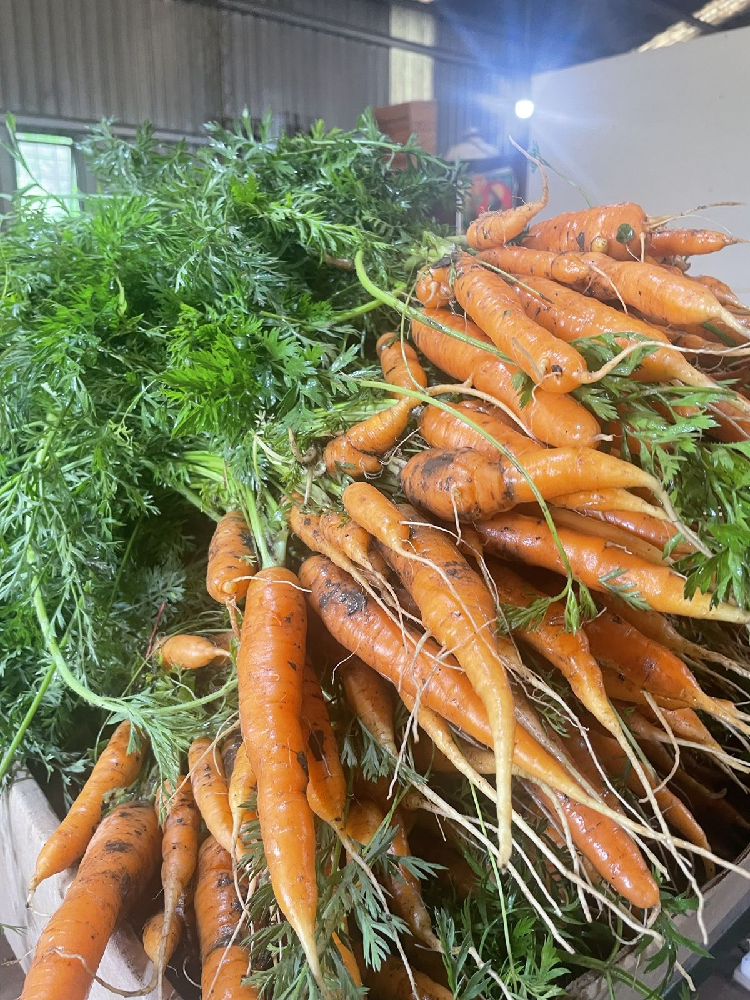
Nodo de consumo agroecológico · Unquillo, Sierras Chicas
Cada quincena reunimos lo que ofrecen todxs lxs productorxs y proveedorxs agroecológicxs de las Sierras Chicas y lo compartimos en un formulario, para que lxs vecinxs puedan sostener un consumo saludable, en resonancia con la tierra.
Cómo funciona
Cada 15 días, lxs productorxs nos cuentan lo que ofrecen a la comunidad, con sus cantidades y precios.
Organizamos esa información en un formulario para que encuentres lo que resuelve o mejora tu alimentación, o algo que te tiente probar por primera vez. Hacés tu pedido y nos llega en el momento.
Le encargamos a cada productorx y proveedorx lo que pidió cada vecinx.
Recibimos, fraccionamos y armamos cada cajón, y lo dejamos listo para la entrega.
Pasás a buscarlo el día y horario que elegiste en el formulario.
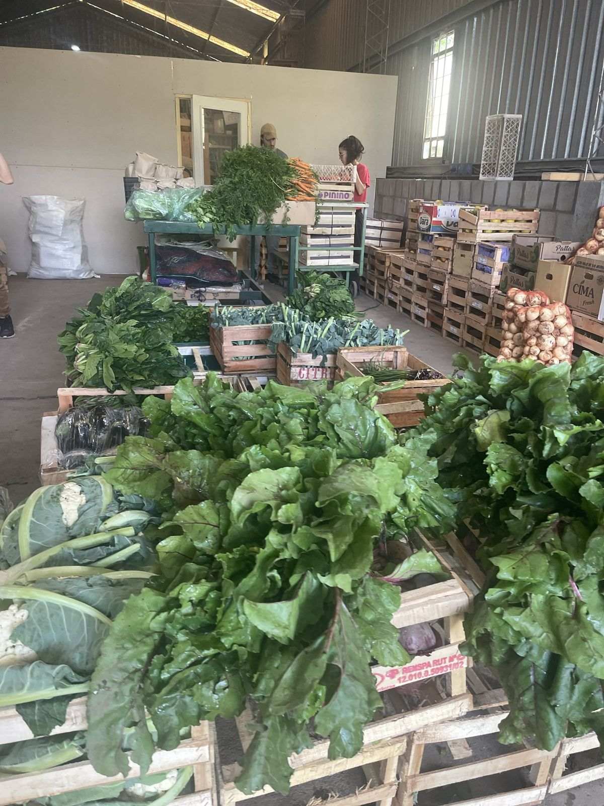
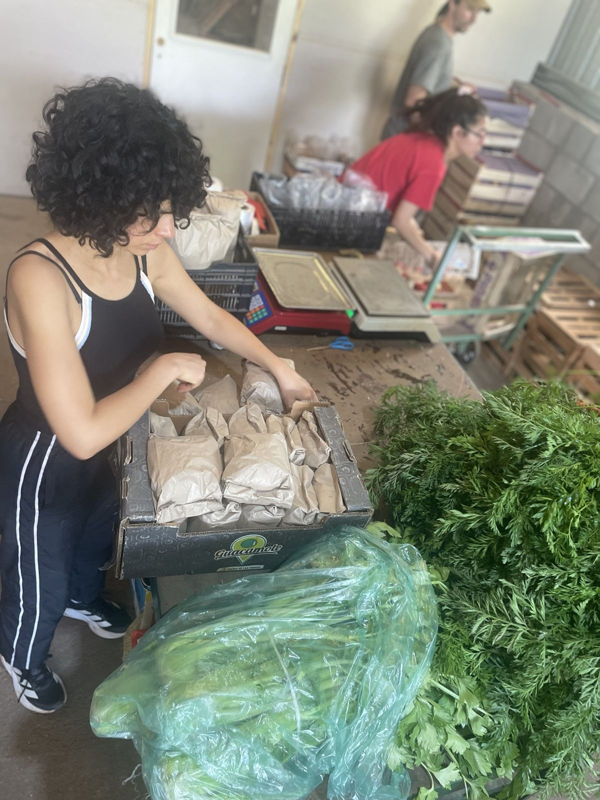
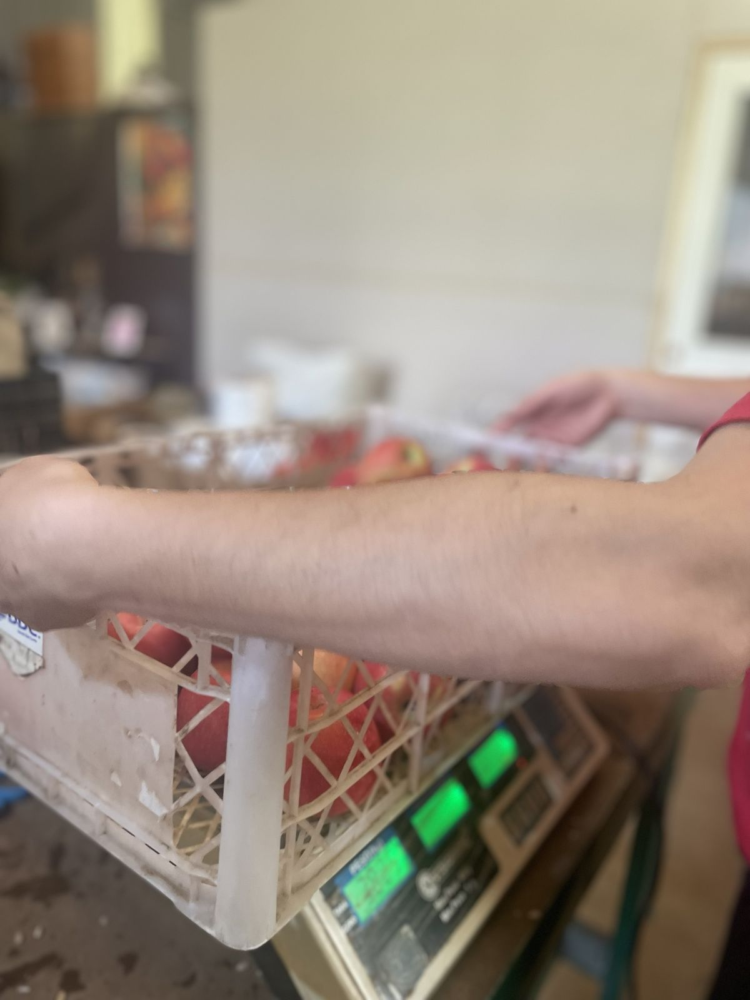
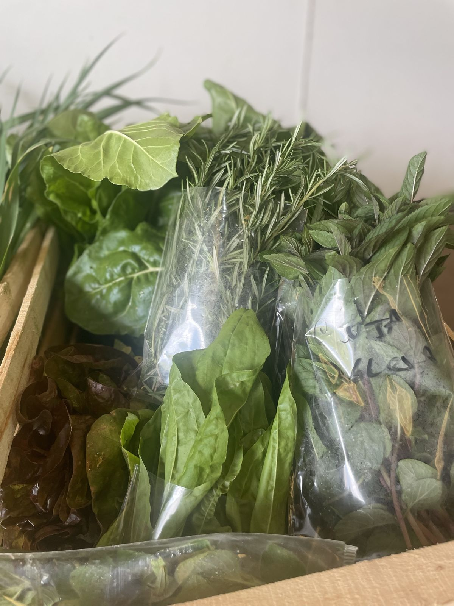
Lo que nos mueve
Una compra colectiva y directa, sin intermediarixs, que reconoce el trabajo de cada productorx.
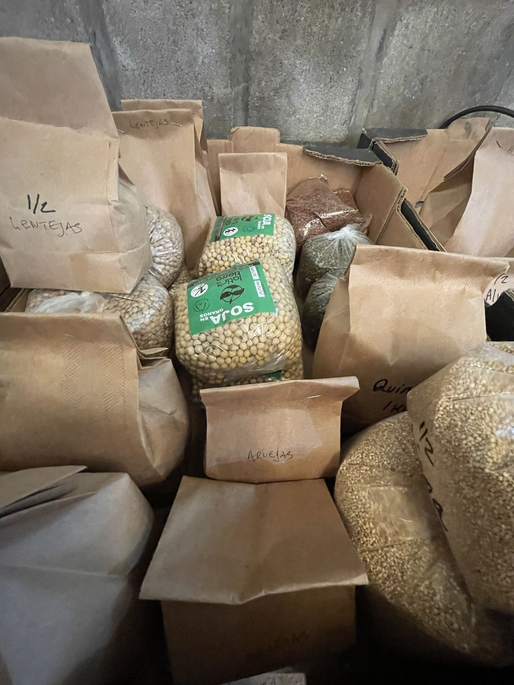
Cada productorx recibe un encargo concreto, lo que la comunidad pidió. Así nada se pierde en el camino.
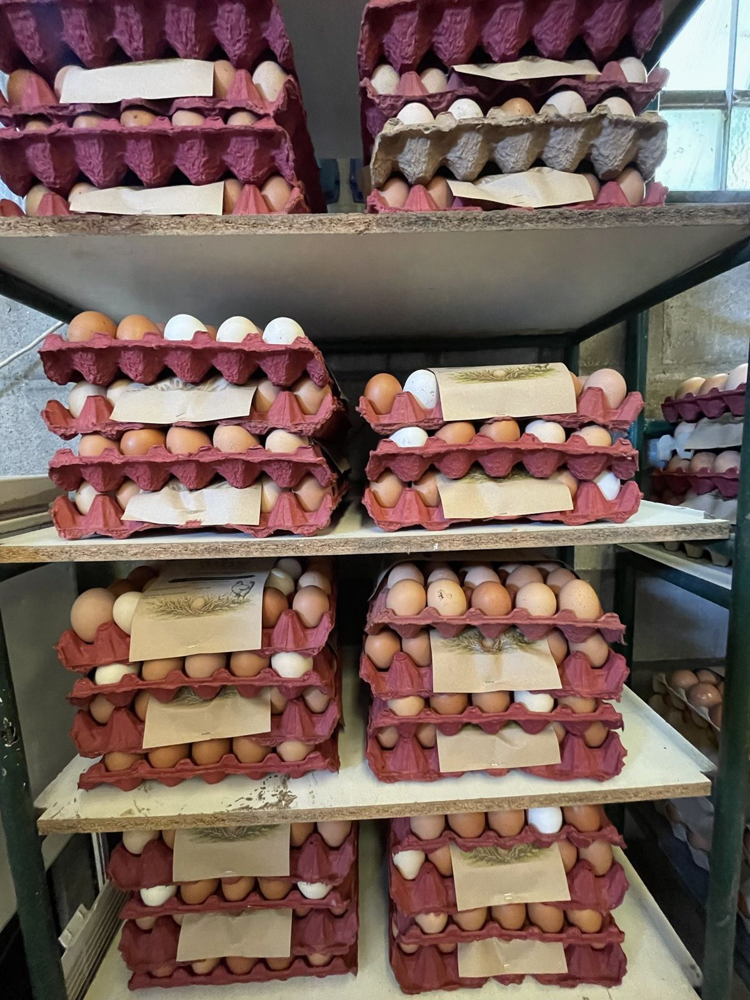
Los frascos, los cajones, las recetas y los saberes vuelven a la red.
Cada quincena es una obra colectiva, del primer pedido al último cajón.
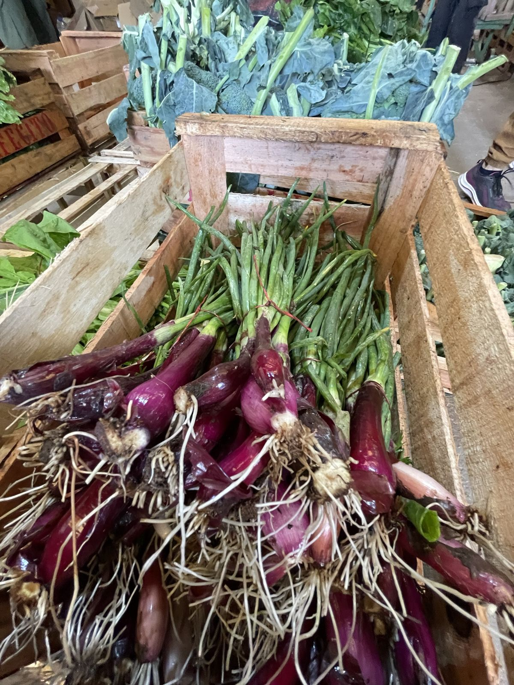
Producción agroecológica, o en camino a serlo.
Sumate
Empezá por donde quieras. Muchxs empiezan pidiendo y después se animan a más.
Para vecinxs de Sierras Chicas
Te sumás al grupo de WhatsApp, pedís cuando abre la quincena y retirás en el galpón de Unquillo.
Unirme al grupoPara quienes quieren dar una mano sin ser parte de la equipa
Contar el Nodo a otras familias, acercar productorxs, compartir recetas y saberes, acompañar una jornada en el galpón.
Para productorxs
Ponés un precio justo, conocés el encargo de la comunidad antes de elaborar o cosechar y recibís lo que corresponde por lo que entregaste.
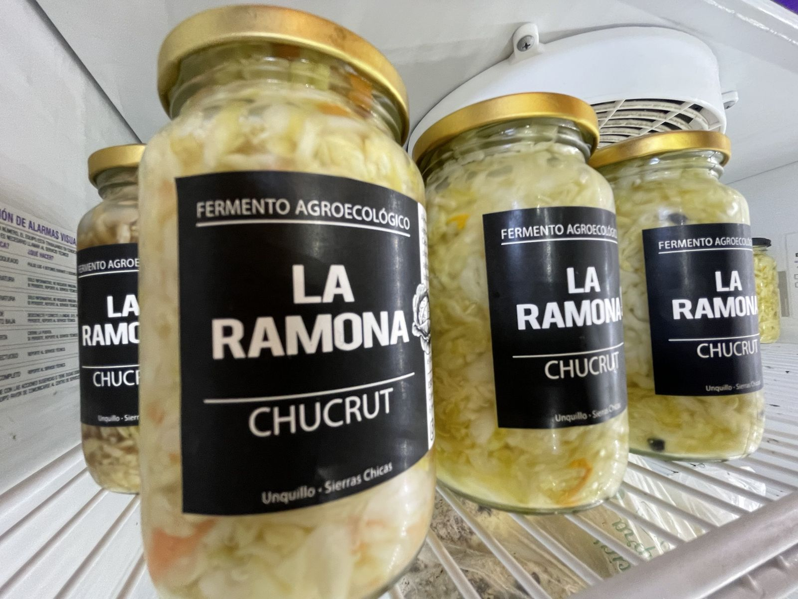
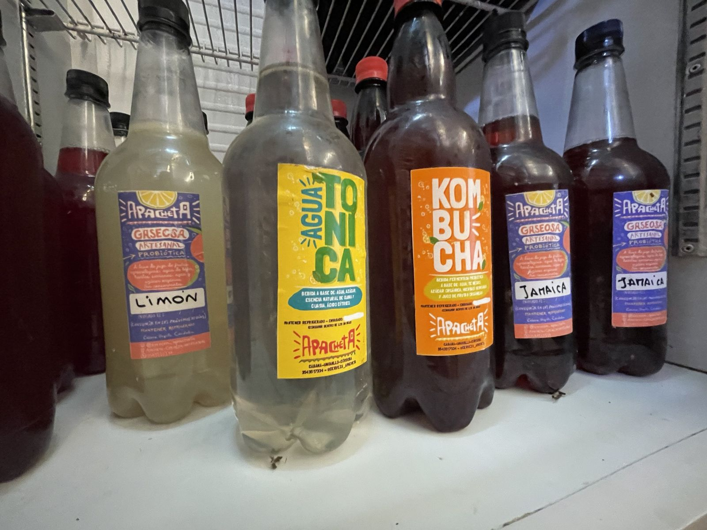
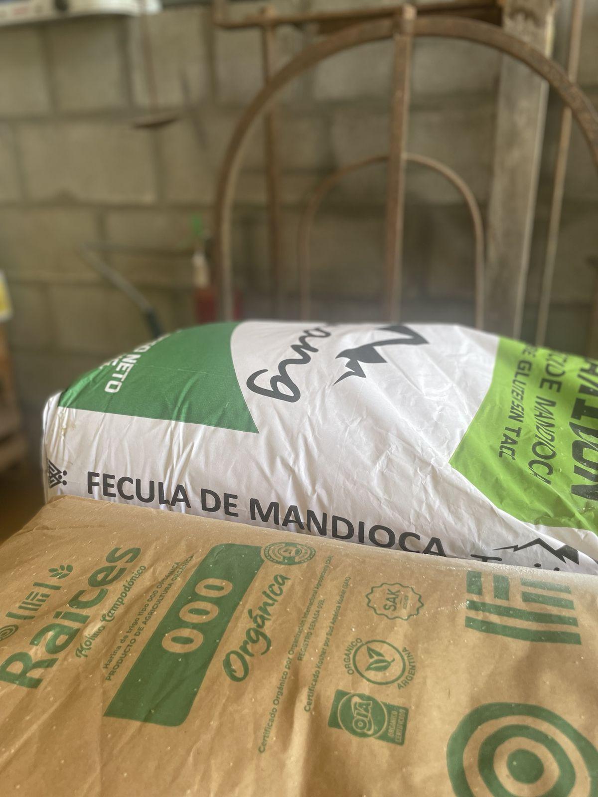
Quiénes somos
¿Podemos hacer que el alimento de las Sierras Chicas llegue al barrio con la menor cantidad de pasos posible y al precio más justo?
Así nació el Nodo Matriz, el 21 de julio de 2021, en el solsticio de invierno. La primera vez éramos entre 15 y 20 familias, sin balanza ni tablones, solo con ganas de organizarnos. Hoy somos una red de familias, productorxs y una equipa que sostiene cada quincena. Y queremos compartir lo que aprendimos con otros barrios.
21 · 07 · 2021
Preguntas
Cada quincena compartimos el link del formulario en el grupo de WhatsApp del Nodo. Elegís qué y cuánto, completás tus datos y lo enviás. Te llega un correo con el detalle y el total.
Cada edición tiene sus fechas y las anunciamos en el grupo. Habitualmente el formulario abre el fin de semana y cierra el martes al mediodía. Después del cierre no se pueden sumar pedidos, porque ya hicimos los encargos a lxs productorxs.
En nuestro galpón, en Unquillo. En el formulario elegís el día de retiro entre los que propone esa edición, y la ubicación exacta te llega junto con la confirmación del pedido. Lo refrigerado se entrega aparte, en el puesto de frío.
Elegís la forma de pago en el formulario. Los datos para transferir llegan con el correo de confirmación.
A veces una cosecha no alcanza o unx productorx no puede traer todo. En ese caso te escribimos antes del retiro con el detalle de lo que cambió y el nuevo total: solo pagás lo que recibís.
Sí, en lo que lo permite. El formulario te muestra las fracciones disponibles de cada alimento (por ejemplo ½ o ¼ kg) con su precio.
Traelos cuando vengas a retirar. Los cajones de madera y muchos frascos vuelven a la red y nos son de gran ayuda.
Porque organizar cada edición es trabajo: recibir, fraccionar, armar, entregar y hacer las cuentas. El aporte (mínimo 15 %) sostiene ese trabajo y el espacio, sin cambiar lo que recibe cada productorx.
Contando el Nodo, acercando productorxs, compartiendo recetas o acompañando una jornada en el galpón. Escribinos desde Sumate.
Contanos qué producís, dónde y cómo, desde Sumar tu producción. Te vamos a contar cómo es la carga de lo que ofrecés cada quincena y los días de entrega en el galpón.
Fotos y novedades
Pronto vamos a compartir fotos del galpón, las ediciones y lxs productorxs de la red.
Todavía no hay novedades publicadas.